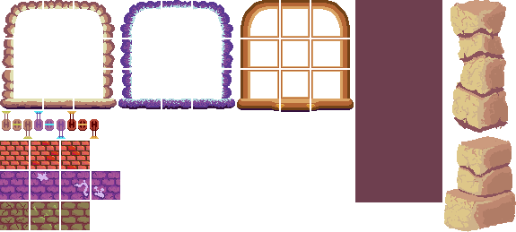
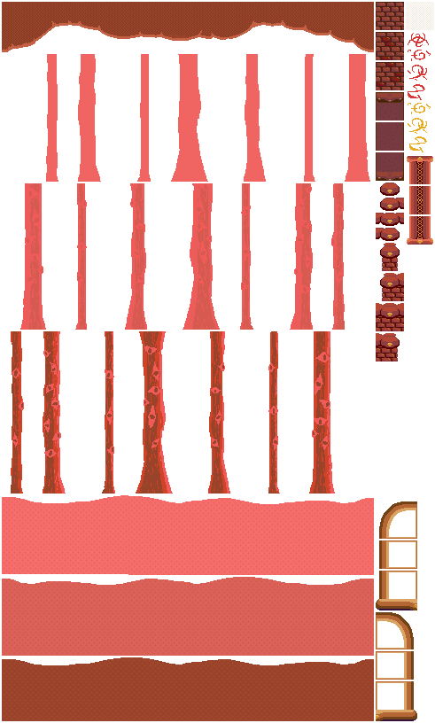
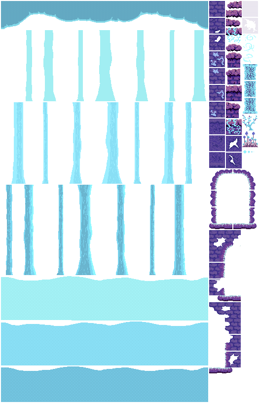
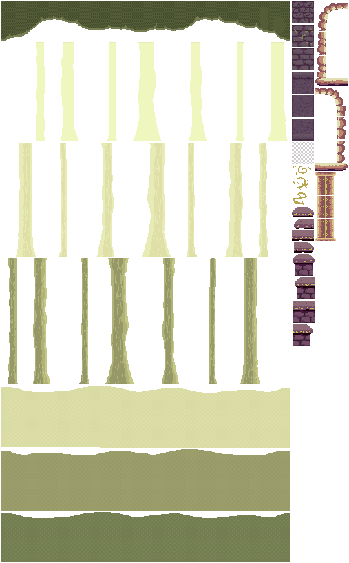

The Tale of the Broken Spell





"El tiempo no es lineal, sino un espiral que se retuerce sobre sí misma..."
En este sidescroller plataformero controlaras a una joven maga, quien encuentra un antiguo grimorio de hechizos que le dará el poder para viajar en el tiempo. Por desgracia el hechizo está incompleto y cada vez que lo usa es transportada a versiones alternas de su realidad. La maga debe viajar entre estas realidades paralelas y recolectar las páginas faltantes del grimorio para así completar el hechizo y escapar de este bucle espacio-temporal.
Assets diseñados en Photosohop y Krita. Desarrollado colaborativamente en el marco de la Women Game Jam 2024.
Mis Roles:
- Asset Artist
- Concept Artist
Tareas Específicas:
- Diseño de conept art, aplicando assets finales para definir principios de diseño de nivel
- Diseño de 100+ assets modulares tipo PixelArt para implementación en Unity
- Organización de atlas de texturas